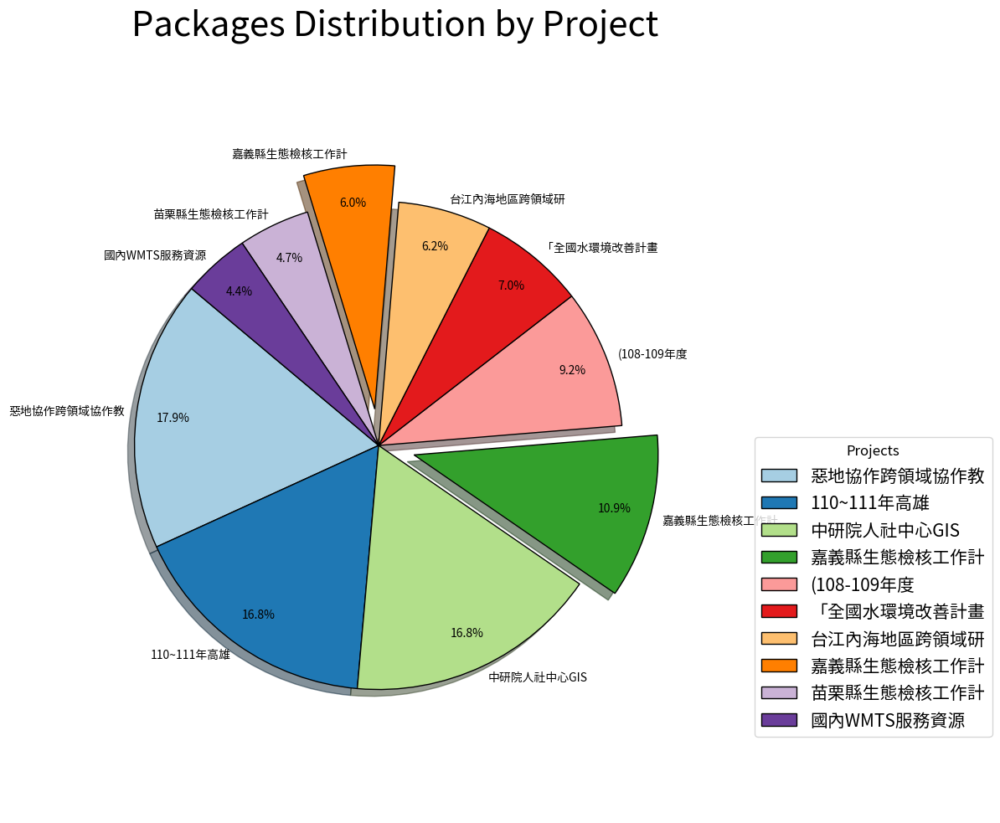

Frequently Used Data#
data format#
Show code cell outputs
[{'author': '施君翰、高偉傑', 'author_email': None, 'contact_email': '', 'contact_person': '', 'creator_user_id': 'b274036a-23b4-4097-b4f5-884a367d8807', 'data_type': ['doc'], 'groups': [], 'id': 'e67bc7e2-7fc2-4d41-a994-064954e164bf', 'isopen': False, 'keywords': [], 'language': [], 'license_id': 'notspecified', 'license_title': 'License Not Specified', 'maintainer': None, 'maintainer_email': None, 'metadata_created': '2023-03-14T09:44:11.573993', 'metadata_modified': '2023-08-19T14:12:45.867569', 'name': 'e8d91', 'notes': '藤寮坑溝第二期生態檢核 (施工前)', 'num_resources': 3, 'num_tags': 0, 'organization': None, 'private': False, 'process_step': '', 'relationships_as_object': [], 'relationships_as_subject': [], 'remarks': '', 'resources': [{'cache_last_updated': None, 'cache_url': None, 'created': '2023-03-14T09:46:25.010188', 'datastore_active': False, 'datastore_contains_all_records_of_source_file': False, 'description': '藤寮二期12月生態檢核報告 (施工前)', 'format': 'PDF', 'hash': '', 'id': '0811f716-6ee6-488f-a81d-028fdcc3de9d', 'last_modified': '2023-03-14T09:46:24.926496', 'metadata_modified': '2023-08-19T14:11:57.491983', 'mimetype': 'application/pdf', 'mimetype_inner': None, 'name': '藤寮二期12月生態檢核報告 (施工前)', 'package_id': 'e67bc7e2-7fc2-4d41-a994-064954e164bf', 'position': 0, 'resource_type': None, 'size': 5305747, 'state': 'active', 'url': 'https://data.depositar.io/dataset/e67bc7e2-7fc2-4d41-a994-064954e164bf/resource/0811f716-6ee6-488f-a81d-028fdcc3de9d/download/%252525E8%25252597%252525A4%252525E5%252525AF%252525AE%252525E4%252525BA%2525258C%252525E6%2525259C%2525259F12%252525E6%2525.pdf', 'url_type': 'upload'}, {'cache_last_updated': None, 'cache_url': None, 'created': '2023-08-19T14:10:58.626073', 'datastore_active': False, 'datastore_contains_all_records_of_source_file': False, 'description': '藤寮二期12月生態檢核報告 (施工中) - 30%', 'format': 'PDF', 'hash': '', 'id': '0f308794-e48b-40b1-9269-e07b36bc7d53', 'last_modified': '2023-08-19T14:10:58.148863', 'metadata_modified': '2023-08-19T14:11:57.492114', 'mimetype': 'application/pdf', 'mimetype_inner': None, 'name': '藤寮二期12月生態檢核報告 (施工中) - 30%', 'package_id': 'e67bc7e2-7fc2-4d41-a994-064954e164bf', 'position': 1, 'resource_type': None, 'size': 5433863, 'state': 'active', 'url': 'https://data.depositar.io/dataset/e67bc7e2-7fc2-4d41-a994-064954e164bf/resource/0f308794-e48b-40b1-9269-e07b36bc7d53/download/%25E8%2597%25A4%25E5%25AF%25AE%25E4%25BA%258C%25E6%259C%259F12%25E6%259C%2588%25E7%2594%259F%25E6%2585%258B%25E6%25AA%25A2%25E6%25A0%25B8%25E5%25A0%25B1%25E5%25.pdf', 'url_type': 'upload'}, {'cache_last_updated': None, 'cache_url': None, 'created': '2023-08-19T14:11:57.753858', 'datastore_active': False, 'datastore_contains_all_records_of_source_file': False, 'description': '藤寮二期8月生態檢核報告 (施工中) - 60%', 'format': 'PDF', 'hash': '', 'id': '975e8078-e639-4c74-8396-2e43b923c605', 'last_modified': '2023-08-19T14:11:57.405208', 'metadata_modified': '2023-08-19T14:11:57.492314', 'mimetype': 'application/pdf', 'mimetype_inner': None, 'name': '藤寮二期8月生態檢核報告 (施工中) - 60%', 'package_id': 'e67bc7e2-7fc2-4d41-a994-064954e164bf', 'position': 2, 'resource_type': None, 'size': 8235478, 'state': 'active', 'url': 'https://data.depositar.io/dataset/e67bc7e2-7fc2-4d41-a994-064954e164bf/resource/975e8078-e639-4c74-8396-2e43b923c605/download/%E8%97%A4%E5%AF%AE%E4%BA%8C%E6%9C%9F8%E6%9C%88%E7%94%9F%E6%85%8B%E6%AA%A2%E6%A0%B8%E5%A0%B1%E5%91%8A%20%28%E6%96%BD%E5%B7%A5%E4%B8%AD%29%20-%2060%25.pdf', 'url_type': 'upload'}], 'state': 'active', 'tags': [], 'title': '藤寮坑溝第二期生態檢核', 'type': 'dataset', 'url': None, 'version': None}, {'author': '王育晟', 'author_email': None, 'contact_email': 'wang1002jack@gmail.com', 'contact_person': '王育晟', 'created_time': '2023', 'creator_user_id': '4e039ddd-b226-450e-a71f-7471cb3814f6', 'data_type': ['archive'], 'end_time': '1956', 'groups': [], 'id': 'fd1605c6-ba49-4558-b446-2b59cb05512c', 'isopen': True, 'keywords': [], 'language': [], 'license_id': 'cc-by', 'license_title': 'CC-BY 4.0', 'license_url': 'https://creativecommons.org/licenses/by/4.0/', 'maintainer': None, 'maintainer_email': None, 'metadata_created': '2023-08-18T06:48:00.077011', 'metadata_modified': '2023-08-18T06:49:12.054177', 'name': '1956', 'notes': '本圖徵係根據中研院台北百年歷史度圖網站中1956年台北市都市計畫道路系統圖，依據上面公園圖徵數化而得。', 'num_resources': 1, 'num_tags': 1, 'organization': None, 'private': False, 'process_step': '', 'relationships_as_object': [], 'relationships_as_subject': [], 'remarks': '', 'resources': [{'cache_last_updated': None, 'cache_url': None, 'created': '2023-08-18T06:49:07.334601', 'datastore_active': False, 'datastore_contains_all_records_of_source_file': False, 'description': '', 'format': 'application/vnd.rar', 'hash': '', 'id': 'f87de2ec-d2bc-48d0-adb4-d063cb5204e7', 'last_modified': '2023-08-18T06:49:07.141289', 'metadata_modified': '2023-08-18T06:49:12.062012', 'mimetype': 'application/vnd.rar', 'mimetype_inner': None, 'name': '1956台北市都市計畫公園', 'package_id': 'fd1605c6-ba49-4558-b446-2b59cb05512c', 'position': 0, 'resource_crs': 4326, 'resource_type': None, 'size': 15034, 'state': 'active', 'url': 'https://data.depositar.io/dataset/fd1605c6-ba49-4558-b446-2b59cb05512c/resource/f87de2ec-d2bc-48d0-adb4-d063cb5204e7/download/1956%25E5%258F%25B0%25E5%258C%2597%25E9%2583%25BD%25E5%25B8%2582%25E8%25A8%2588%25E7%2595%25AB%25E5%2585%25AC%25E5%259C%2592.rar', 'url_type': 'upload'}], 'spatial': '{"type":"Polygon","coordinates":[[[121.4773368,25.0053915],[121.4773368,25.09033809],[121.5949315,25.09033809],[121.5949315,25.0053915],[121.4773368,25.0053915]]]}', 'start_time': '1956', 'state': 'active', 'tags': [{'display_name': '1956年台北都市計畫', 'id': '235e2114-367e-4781-b14b-cf3d4f6086d4', 'name': '1956年台北都市計畫', 'state': 'active', 'vocabulary_id': None}], 'temp_res': 'yearly', 'title': '1956年台北都市計畫公園圖徵', 'type': 'dataset', 'url': None, 'version': None, 'x_max': '121.5949315', 'x_min': '121.4773368', 'y_max': '25.09033809', 'y_min': '25.0053915'}]
{'approval_status': 'approved', 'created': '2018-10-15T22:44:45.141092', 'description': '', 'display_name': '00. 一般性參考資料 / General reference', 'extras': [], 'groups': [], 'id': '5f5ffe95-4d22-4005-a54e-bb5273f6e5be', 'image_display_url': 'https://data.depositar.io/uploads/group/2018-10-23-061540.113498icon-01.svg', 'image_url': '2018-10-23-061540.113498icon-01.svg', 'is_organization': False, 'name': 'general-reference', 'num_followers': 0, 'package_count': 15, 'state': 'active', 'tags': [], 'title': '00. 一般性參考資料 / General reference', 'type': 'group'}
{'approval_status': 'approved', 'created': '2019-12-10T10:59:34.280389', 'description': '此專案是由基隆市政府委託觀察家生態顧問有限公司執行，針對大武崙溪範圍內3件工程：「大武崙溪排水瓶頸改善工程」、「大武崙溪堤後排水暨瓶頸改善工程(堤後排水及護岸加高)」、「大武崙工業區小型抽排及調整池工程」，秉持生態保育之原則執行工程生態檢核作業。', 'display_name': '107基隆市生態檢核工作計畫', 'extras': [], 'groups': [], 'id': 'e95ce98f-705c-417b-821f-9dca68c8d634', 'image_display_url': 'https://data.depositar.io/uploads/group/2020-08-13-124731.523792IMG9499.JPG', 'image_url': '2020-08-13-124731.523792IMG9499.JPG', 'is_organization': True, 'name': '107ecological_check_project_of_keelung_city_2018', 'num_followers': 0, 'package_count': 1, 'state': 'active', 'tags': [], 'title': '107基隆市生態檢核工作計畫', 'type': 'organization'}
Largest project#
Show code cell source
count_pro = 0
top_project = []
for i in o_project:
count_pro += 1
top_project.append({'display_name':i['display_name'],'packages':i['package_count']})
sort_project = sorted(top_project,key=lambda x:x['packages'],reverse=True)
pro_values = [i['packages']for i in sort_project[:10]]
pro_labels = [i['display_name'][:10] for i in sort_project[:10]]
colors = plt.cm.Paired(range(len(data)))
# Explode a specific slice
explode = [0.15 if name.startswith('嘉義縣') else 0 for name in pro_labels]
plt.figure(figsize=(12, 10))
plt.pie(
pro_values,
labels=pro_labels,
colors=colors,
autopct='%1.1f%%',
startangle=140,
explode=explode, # Explode a slice for emphasis
shadow=True, # Add shadow to the chart
wedgeprops={'edgecolor': 'black'}, # Add black edge to each slice
pctdistance=0.85, # Distance of the percentage labels from the center
labeldistance=1.05, # Distance of the slice labels from the center
)
plt.axis('equal') # Equal aspect ratio ensures that pie is drawn as a circle.
plt.title('Packages Distribution by Project', fontsize=30)
plt.rcParams['font.size'] = 12
# Adding a legend with custom colors and display names
plt.legend(
loc='upper left',
labels=pro_labels,
bbox_to_anchor=(1, 0.5),
prop={'size': 15},
title="Projects"
)
plt.tight_layout()
plt.show()

Largest topic#
#include tags也做得到
#Returning a list of packages is too expensive, 要顯現出該topic有什麼資料集是做不到的事情
Show code cell source
unsort_topic = []
for i in o_topic:
unsort_topic.append({'name': i['name'], 'package_count': i['package_count']})
topic = sorted(unsort_topic, key=lambda x: x['package_count'],reverse=True)
values = [item['package_count'] for item in topic[:10]]
labels = [item['name'][:20] for item in topic[:10]]
print(topic)
# plt.bar(labels, values)
# plt.xlabel('Categories')
# plt.ylabel('Package Count')
# plt.title('Bar Graph: Package Count by Category')
# plt.xticks(rotation=45, ha='right') # To rotate the labels for better readability
# plt.tight_layout() # To prevent label cutoff
# plt.show()
plt.barh(labels, values, color='skyblue') # Use barh for horizontal bars
plt.ylabel('Categories')
plt.title('TOP N Packages Count by Categories',pad=20)
# Reverse the y-axis for better presentation (optional)
plt.gca().invert_yaxis()
# Add data labels on the bars
for index, value in enumerate(values):
plt.text(value + 1, index, str(value), va='center')
plt.gca().spines['right'].set_visible(False)
plt.gca().spines['bottom'].set_visible(False)
plt.yticks(fontsize=8)
# Remove ticks
plt.tick_params( bottom=False, labelbottom=False)
plt.tight_layout()
plt.show()
[{'name': 'thcts', 'package_count': 115}, {'name': 'geography-and-places', 'package_count': 64}, {'name': 'natural-and-physical-sciences', 'package_count': 57}, {'name': 'society-and-social-sciences', 'package_count': 54}, {'name': 'eco-check', 'package_count': 51}, {'name': 'society', 'package_count': 45}, {'name': 'uas-observation', 'package_count': 40}, {'name': 'biota', 'package_count': 32}, {'name': 'oceans', 'package_count': 24}, {'name': 'farming', 'package_count': 18}, {'name': 'general-reference', 'package_count': 15}, {'name': 'culture-and-the-arts', 'package_count': 12}, {'name': 'economy', 'package_count': 12}, {'name': 'climatology-meteorology-atmosphere', 'package_count': 11}, {'name': 'human-activities', 'package_count': 10}, {'name': 'geoscientific-information', 'package_count': 10}, {'name': 'environment', 'package_count': 10}, {'name': 'religion-and-belief-systems', 'package_count': 9}, {'name': '14-climate-change', 'package_count': 9}, {'name': 'asian-soundscape-monitoring-network', 'package_count': 8}, {'name': 'location', 'package_count': 8}, {'name': 'history-and-events', 'package_count': 7}, {'name': 'ntu-geog406_nstc111-6', 'package_count': 7}, {'name': 'technology-and-applied-sciences', 'package_count': 5}, {'name': 'inland-waters', 'package_count': 5}, {'name': 'people-and-self', 'package_count': 4}, {'name': 'health-and-fitness', 'package_count': 3}, {'name': 'transportation', 'package_count': 3}, {'name': 'planning-cadastre', 'package_count': 3}, {'name': 'boundaries', 'package_count': 3}, {'name': 'elevation', 'package_count': 3}, {'name': 'philosophy-and-thinking', 'package_count': 2}, {'name': '110picture', 'package_count': 2}, {'name': 'health', 'package_count': 2}, {'name': 'utilities-communication', 'package_count': 2}, {'name': 'imagery-base-maps-earth-cover', 'package_count': 2}, {'name': 'fgo_collection', 'package_count': 2}, {'name': 'structure', 'package_count': 1}, {'name': 'miaoli-com-tw', 'package_count': 1}, {'name': 'emergecy', 'package_count': 1}, {'name': 'bcs', 'package_count': 1}, {'name': 'hualien_econet', 'package_count': 1}, {'name': 'urbansustain', 'package_count': 1}, {'name': 'mathematics-and-logic', 'package_count': 0}, {'name': 'covid-19', 'package_count': 0}, {'name': 'intelligence-military', 'package_count': 0}, {'name': 'test2022', 'package_count': 0}, {'name': 'rdm_general', 'package_count': 0}]
Largest type#
problem of undefined needs to be solved
Show code cell source
types = []
for j in o_dataset:
if j['resources']:
if j['resources'][0]['format']=='':
types.append('undefined')
elif j['resources'][0]['format']==".pdf":
types.append('PDF')
else:
types.append(j['resources'][0]['format'])
else:
types.append('lost')
type_counts = Counter(types)
all_top_type = type_counts.most_common(120)
top_type = type_counts.most_common(10)
print(all_top_type)
all_top_type_mentions = [i[1] for i in all_top_type]
colors = plt.cm.tab20.colors
top_name = [i[0] for i in top_type]
top_type_mentions = [i[1] for i in top_type]
fig, ax = plt.subplots()
wedges, texts, autotexts = ax.pie(top_type_mentions, labels=top_name, startangle=90,
wedgeprops=dict(width=0.4, edgecolor='w'),
autopct= '', # Customize autopct
pctdistance=0.85, colors=colors) # Set pctdistance for percent labels
# Equal aspect ratio ensures that pie is drawn as a circle.
ax.axis('equal')
# Add a circle in the center to create a doughnut effect
centre_circle = plt.Circle((0,0),0.70,fc='white')
fig.gca().add_artist(centre_circle)
# Adding annotation labels outside the pie chart
for index,text in enumerate(texts):
text.set_fontsize(10) if index<6 else text.set_fontsize(0)
for index,autotext in enumerate(autotexts):
autotext.set_text('') if index>5 else None
plt.legend(
loc='upper left',
labels=top_name,
bbox_to_anchor=(1, 0.5),
prop={'size': 10},
title="Projects"
)
plt.title('Top types with the Most Mentions',pad=20)
plt.tight_layout()
plt.show()
[('PDF', 1086), ('SHP', 131), ('undefined', 121), ('CSV', 101), ('JPEG', 99), ('HTML', 51), ('KML', 39), ('WMTS', 33), ('PNG', 15), ('KMZ', 14), ('XLSX', 12), ('lost', 11), ('DOC', 9), ('XML', 9), ('ZIP', 7), ('DOCX', 7), ('TIFF', 7), ('.PDF', 6), ('ODS', 6), ('geotif', 6), ('TIF', 6), ('.xlsx', 5), ('RAR', 5), ('external resources', 5), ('audio/x-wav', 5), ('PPTX', 4), ('application/vnd.rar', 3), ('.docx', 3), ('mat', 3), ('XLS', 3), ('TXT', 3), ('dBase', 3), ('CPG', 3), ('image/heic', 2), ('.jpg', 2), ('QGIS', 2), ('PPT', 2), ('ipynb', 1), ('warc', 1), ('python', 1), ('tif', 1), ('.zip', 1), ('website', 1), ('application/x-7z-compressed', 1), ('WARC', 1), ('ODT', 1), ('gtm', 1), ('GIF', 1), ('RAW', 1), ('GZ', 1), ('JSON', 1), ('WAV', 1), ('WMS', 1), ('geotiff', 1), ('ECW', 1)]